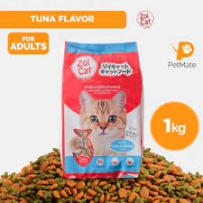

| 🐱 ZOI CAT 🐱 |
|  |
ZOI CAT 💰 Price: ₱100 per kilo 📌 Description: Zoi Cat is a high-quality cat food formulated to provide balanced nutrition for adult cats. Supports healthy growth, shiny coat, and strong immunity for your feline friends. ✅ Key Benefits: - Promotes healthy muscles and bones - Enhances immunity and overall health - Maintains shiny fur and skin - Provides complete nutrition for daily feeding 🐱 Best For: Adult cats of all breeds 🕒 Feeding Guide: Feed daily with clean water. Adjust portions based on age, weight, and activity level of your cat. |